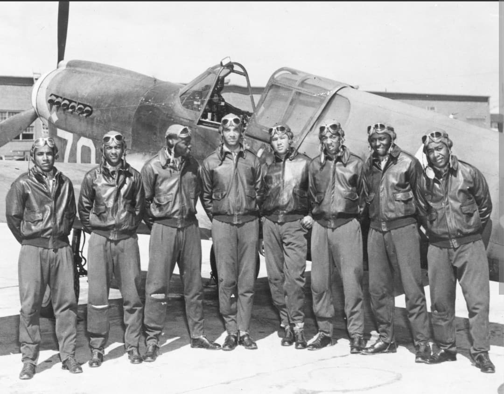
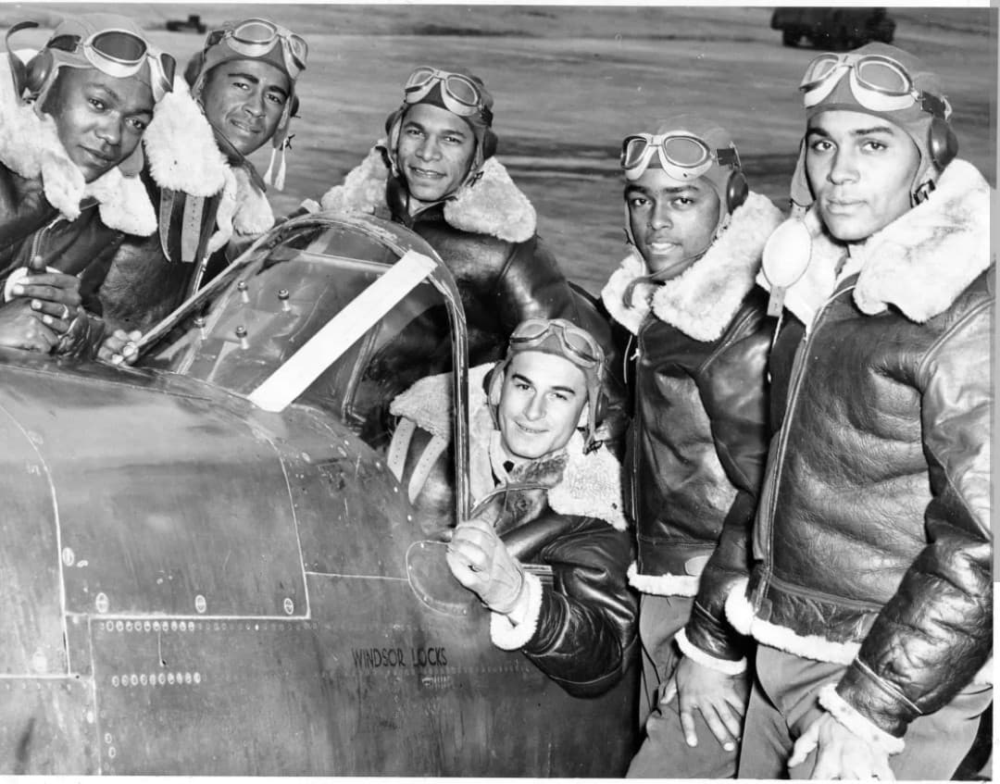
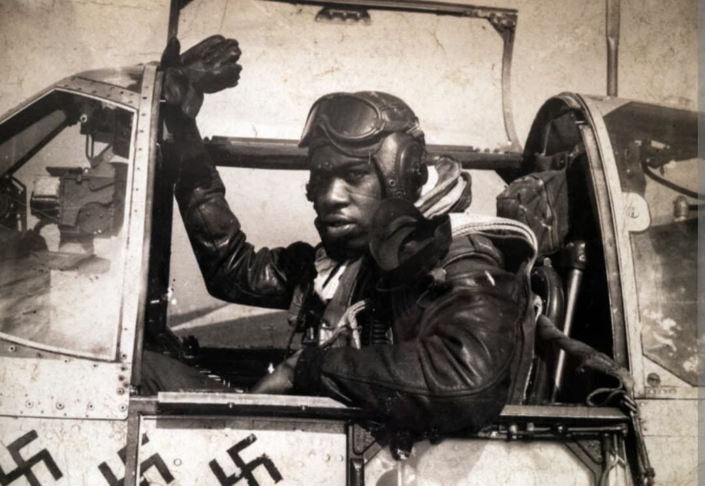
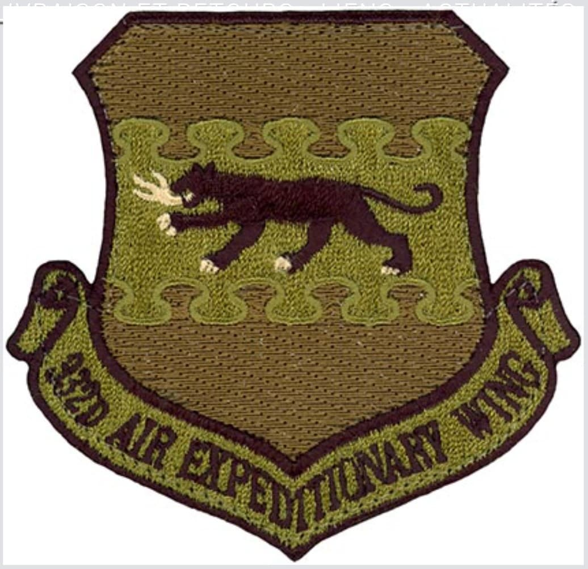

Pendant la Seconde Guerre mondiale, alors que les forces armées des États-Unis appliquent une stricte ségrégation raciale, les Tuskegee Airmen deviennent les premiers aviateurs militaires afro-américains de l’histoire américaine.
Engagés en Afrique du Nord puis dans les cieux d’Europe au sein du 99th Fighter Squadron et du 332nd Fighter Group, ces pilotes et leurs équipes au sol mènent un double combat : vaincre l’Allemagne nazie et briser les préjugés raciaux au sein de leur propre pays.
Jusqu’en 1941, l’aviation militaire américaine refuse d’intégrer des pilotes noirs, s’appuyant sur des rapports militaires biaisés qui prétendent qu’ils sont inaptes au combat aérien. Sous la pression des mouvements des droits civiques, de la presse afro-américaine et avec le soutien d’Eleanor Roosevelt, l’armée accepte finalement de créer une unité d’entraînement séparée.
La formation s’installe au Tuskegee Institute et sur la base aérienne de Tuskegee, en Alabama. Soumis à une sélection impitoyable, le programme forme :

Déployés d’abord en Afrique du Nord et en Sicile dès 1943 sur P-40 Warhawk et P-39 Airacobra, les pilotes de Tuskegee rejoignent ensuite l’Italie en 1944 au sein de la 15th Air Force. Équipés de P-47 Thunderbolt puis des célèbres chasseurs North American P-51 Mustang, ils peignent l’empennage de leurs avions en rouge vif.
Ce marquage distinctif leur vaut immédiatement le surnom légendaire de « Red Tails » (les Queues Rouges), reconnu aussi bien par les équipages alliés que par les pilotes de la Luftwaffe.

Le 332nd Fighter Group est chargé d’escorter les bombardiers lourds américains B-17 Flying Fortress et B-24 Liberator lors des raids stratégiques au-dessus de l’Autriche, des Balkans, de la Tchécoslovaquie et jusqu’à Berlin.
Contrairement à certains escadrons qui quittaient la formation pour poursuivre les chasseurs allemands afin d’augmenter leur score personnel, le colonel Davis impose une règle absolue :
Grâce à cette discipline de fer, les Red Tails affichent l’un des taux de perte de bombardiers les plus bas de toute l’US Air Force et deviennent l’escorte la plus réclamée par les équipages américains.

Entre 1943 et 1945, les Tuskegee Airmen accomplissent un parcours remarquable sur le théâtre méditerranéen et européen :
Par leur courage, leur rigueur et leurs résultats au combat, les Tuskegee Airmen ont définitivement démontré l’absurdité des thèses ségrégationnistes au sein de l’armée américaine.
Leur exemple, tout comme celui des chauffeurs du Red Ball Express et des tankistes du 761st Tank Battalion, pousse directement le président Harry S. Truman à signer le 26 juillet 1948 le décret présidentiel Executive Order 9981, abolissant officiellement la ségrégation raciale dans les forces armées des États-Unis.
Page du Musée HOP WW2 – Section États-Unis & Unités Célèbres